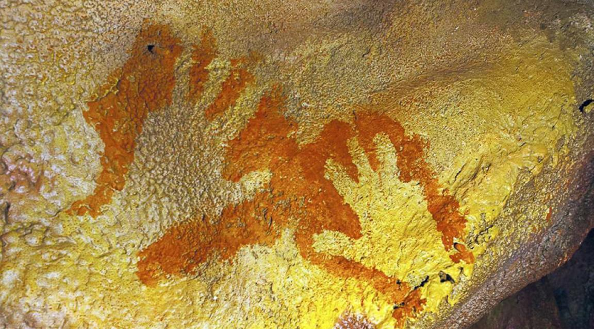
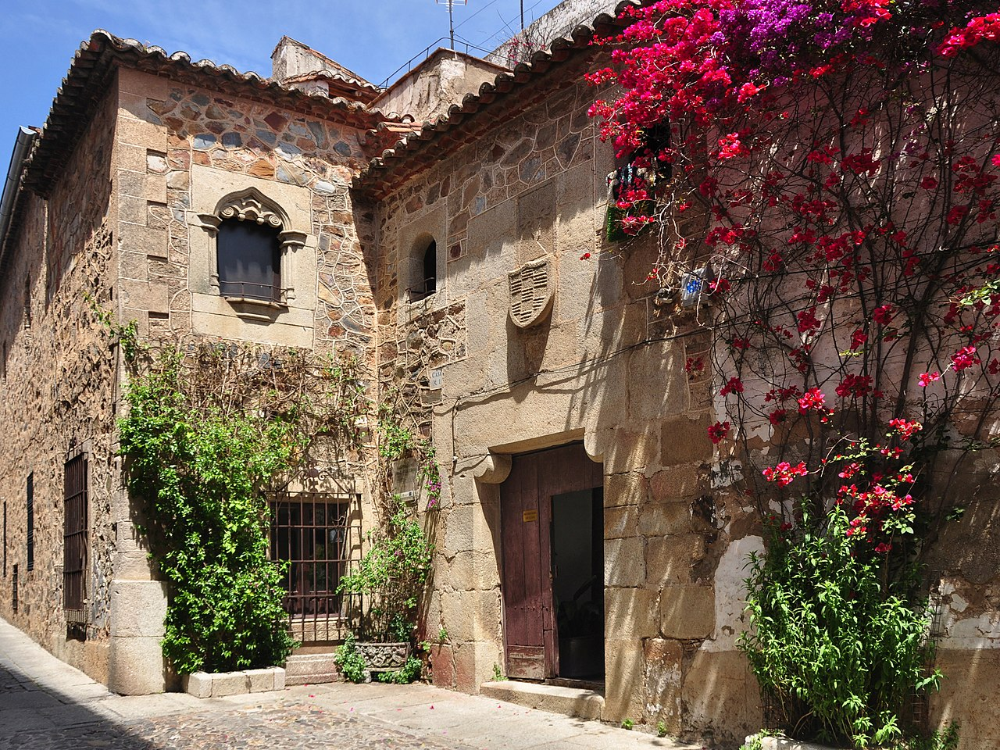
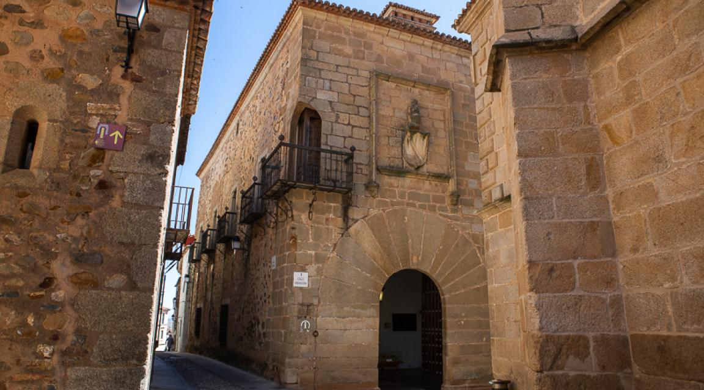
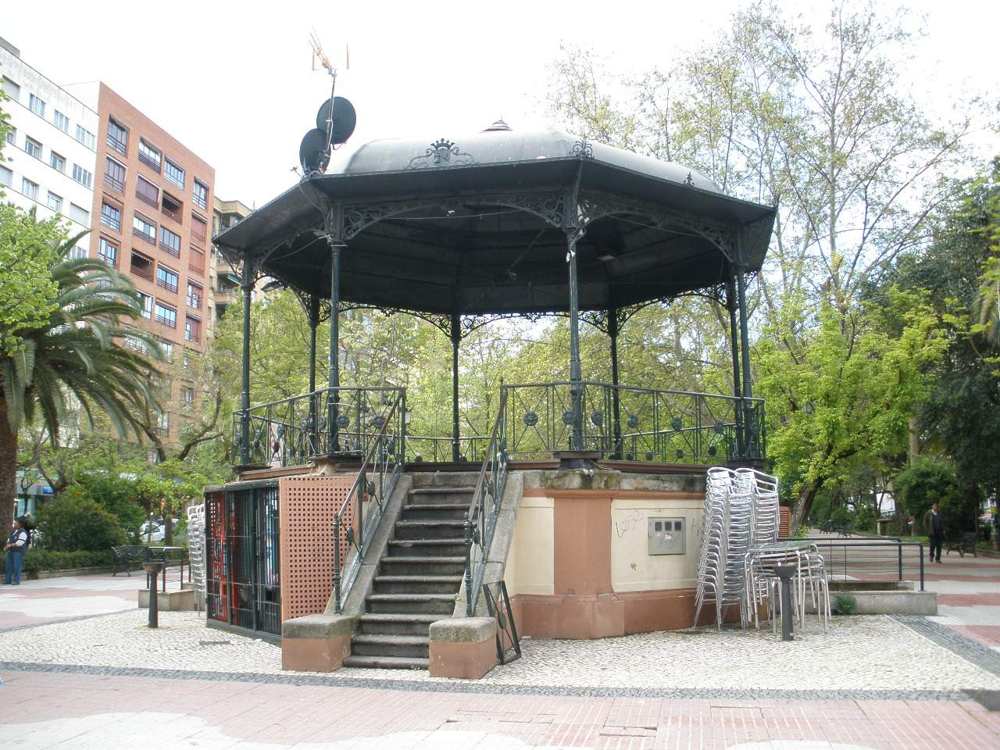
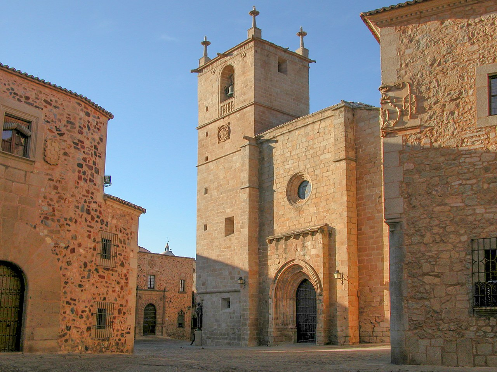

Prehistoria
La ciudad está habitada desde tiempo inmemorial, siendo su principal resto prehistórico la cueva de Maltravieso, cuyo arte rupestre está siendo estudiado por su posible origen neandertal. La primera presencia humana en el territorio de lo que es hoy en día Cáceres se remonta al Paleolítico. En la zona del Calerizo existen varias cuevas, como la cueva de Santa Ana, que posee la presencia humana más antigua de Extremadura, en torno a un millón de años de antigüedad, la Cueva de El Conejar y Maltravieso (descubierta en 1956 por el académico y cronista oficial de Cáceres Carlos Callejo) donde se han encontrado vestigios pictóricos de manos humanas, con la particularidad de que tienen el dedo meñique oculto bajo una capa de pintura (en el pasado se pensaba que se trataba de amputaciones). La datación de estas pinturas comprende varias etapas del Paleolítico Superior. En la cercana cueva de El Conejar se han hallado algunas cerámicas y utensilios líticos que datan la ocupación de la cueva en el Neolítico Antiguo (VI-V milenio a. C.), tampoco hay que descartar la posibilidad de que fuera ocupada durante el Epipaleolítico. Posteriormente algunos cráneos trepanados y cerámicas decoradas apuntan a que la cueva de Maltravieso fue también ocupada durante la Edad del Bronce.
Época romana
Sin embargo, fue en el siglo I a. C. cuando los romanos se asentaron en campamentos (Castra Cecilia y Castra Servilia) de manera permanente en el entorno de la colina en la que estaría la colonia Norba Caesarina junto a la importante vía de comunicaciones que después se conocería como Vía de la Plata.
A 2 km hacia el suroeste se encuentra el antiguo municipio de Aldea Moret, actualmente barriada del mismo nombre integrada dentro de la ciudad, alrededor del cual pueden contemplarse dos yacimientos arqueológicos romanos: Cuarto Roble y El Junquillo.
La Vía de la Plata, señalizada, puede recorrerse al sur de la ciudad: un tramo discurre no lejos del Centro de Formación de Tropas Santa Ana en dirección sur;
hay un tramo excavado en Valdesalor, en donde la calzada cruza el río Salor mediante un puente medieval, recientemente restaurado, que ocupa el lugar de un antiguo puente romano ya perdido.
Además, Cáceres cuenta con uno de los campamentos romanos más grandes de España, el Campamento romano de "Castra Caecilia", situado en Cáceres el Viejo, que data del año 80 a.C.
Edad Media
En torno al siglo V, los visigodos arrasaron el asentamiento romano y hasta el siglo VIII-IX no se volvió a oír hablar de la ciudad.
Fueron los musulmanes, procedentes del norte de África, los que aprovecharon el lugar estratégico sobre el cual se asentó la primitiva colonia romana como base militar para hacer frente a los reinos cristianos del norte, durante los primeros siglos de la Reconquista. Así, en el año 1147 Abd al-Mumin refundó la ciudad sobre los restos hispanorromanos y visigodos. Del árabe proviene el nombre actual de Vía de la Plata, denominación de la calzada romana que unía Astorga con Mérida (del árabe balata, calzada, de donde derivó la palabra «plata»).
La Reconquista cristiana de Cáceres se produjo en 1229 y fue el resultado de un largo proceso que tuvo lugar desde la segunda mitad del siglo XII a principios del siglo XIII. Durante este período, iniciado en 1142 con la conquista de Coria, el río Tajo marcaba una frontera inestable entre cristianos al norte y musulmanes al sur. El reino de Castilla ignoró en parte las posibilidades de conquistar esta zona y los intentos de incorporación de Cáceres vinieron del reino de Portugal y del reino de León, que querían ampliar su anchura en su expansión meridional. El portugués Geraldo Sempavor conquistó Cáceres a mediados del siglo XII en una campaña iniciada en 1165 que alcanzó todo el centro de la actual Extremadura, pero una alianza entre Fernando II de León y los almohades dio a los leoneses el control de la localidad en 1170.
Los almohades realizaron una expedición en 1174 en la cual consiguieron recuperar el control de Cáceres. Salvo un intento de asedio en 1183, los leoneses no volvieron a acercarse a la localidad musulmana hasta el siglo XIII. Tras la batalla de las Navas de Tolosa en 1212, se produjo la conquista de Alcántara en 1213, tras lo cual los cristianos asediaron Cáceres en 1218, 1222, 1223 y 1225, produciéndose la Reconquista definitiva el 23 de abril de 1229. Aunque la conquista fue liderada por Alfonso IX de León, su fallecimiento en 1230 dio lugar a que Cáceres, como parte del Reino de León, pasase a formar parte de la Corona de Castilla y León.
Los fueros de la villa reconquistada fueron otorgados por Alfonso IX y configuraron a Cáceres como una villa de realengo directamente dependiente de la Corona leonesa y sin más gobierno local que un concejo propio. A través de este fuero, la Corona se reservaba una notable porción de tierra entre las de la Orden de Santiago y las de la Orden de Alcántara. La prohibición de propiedades señoriales recogida en este fuero impidió la formación de una nobleza fuerte, quedando la villa dirigida por una mesocracia de caballeros agrícolas.
En el siglo XV, la ciudad padeció las disputas internas de la nobleza. Los Reyes Católicos dictaron varias ordenanzas y provisiones para intentar pacificar a los nobles locales; la más destacada fue la que dictó Isabel I en 1477, durante su estancia en la villa con motivo de la guerra de sucesión castellana, ya que en dicha ordenanza se estableció que los doce regidores del concejo pasarían a ser perpetuos.
Edad Moderna
Durante la guerra de las Comunidades de Castilla llegó a unirse a las filas rebeldes. El 15 de abril de 1522 el monarca concedió la amnistía a la ciudad, a excepción de los comuneros más comprometidos.
En 1653 la villa de Cáceres adquirió, junto con otras cinco localidades de la actual comunidad autónoma, un voto conjunto en las Cortes de Castilla, dando lugar con la compra del voto a la provincia de Extremadura, que en 1822 se dividiría en las de Cáceres y Badajoz. Cáceres estuvo representada en las Cortes de Madrid de 1660-1664 como parte de dicho voto conjunto.
Hasta el siglo XVIII, Cáceres no era sino una villa más de entre las muchas que existían en Extremadura. En el Catastro de Ensenada realizado en Cáceres en 1753 se indica que en la propia localidad solamente vivían 1698 familias. Sin embargo, en la segunda mitad del siglo XVIII se empezó a producir un crecimiento en la localidad motivado por la llegada de pobladores foráneos tanto temporales como permanentes, cuya presencia dio lugar a la formación de una burguesía local hasta entonces inexistente por el carácter rural de la población. A partir de mediados de siglo XVIII, ganaderos del centro de la península, muchos de ellos de la sierra de Cameros, comenzaron a asentarse en tierras extremeñas huyendo de la crisis que sufría la trashumancia. También se asentaron aquí destacados comerciantes textiles procedentes de Cameros y Cataluña.
Edad Contemporánea
En 1790 se produjo un hecho decisivo en la historia de Cáceres que hizo que con el tiempo pasara de ser una simple villa a una ciudad con importancia regional: Carlos IV estableció aquí la sede de la Real Audiencia de Extremadura, el máximo órgano judicial de la región.
Debido a ello, comenzaron a establecerse en la villa numerosos funcionarios y profesionales procedentes de muy diversos lugares de España, que hicieron crecer el peso de la burguesía local. A principios del siglo XIX, se podían distinguir ya barrios de comerciantes en el casco antiguo de Extramuros, ubicándose sus casas en la plaza Mayor y en varias vías de sus inmediaciones como Barrionuevo, Empedrada, Parras, Pintores y Santo Domingo.
El poder judicial no fue el único sector público que aportó carácter urbano en aquella época: la defectuosa división en provincias de la Corona de Castilla provocó que muchos ilustrados reclamaran la división de Extremadura en dos provincias, lo cual benefició a Cáceres al establecerse como capital provincial. En 1810, los afrancesados intentaron crear durante la Guerra Peninsular la prefectura de Cáceres, con límites parecidos a los de la actual provincia. Diez años más tarde y durante el Trienio Liberal, en 1822 fue creada la provincia de Cáceres con capital en esta villa. Sus límites fueron muy parecidos a los actuales, aunque no incluían ni Las Hurdes ni la zona de Miajadas ni la de Guadalupe, que se añadieron en la reforma de 1834
A lo largo del siglo XIX, el surgimiento de la capitalidad impulsó varios proyectos que consolidaron el carácter urbano. En 1846 se inauguró la plaza de toros de Cáceres, considerada una de las de mejor calidad del país en su época y que atrajo numerosos aficionados en una época en la que no existía todavía el turismo que hoy conoce el centro de la ciudad. En 1864 se descubrió en las proximidades un importante yacimiento de fosfatos y para dar cobijo a los mineros que trabajarían en su extracción se creó el poblado de Aldea Moret. El 8 de octubre de 1881 se inauguró la primera estación de ferrocarril, por el rey Alfonso XIl. Durante el discurso de inauguración, Alfonso XII tuvo un lapsus a la hora de pronunciar unas palabras, en las que elogió a la ciudad de Cáceres. Rápidamente fue advertido de su error, ya que Cáceres no era ciudad sino villa, a lo que el monarca replicó:
«Pues desde hoy es ciudad»
De esta forma, el monarca se ratificó sus palabras y Cáceres fue elevada a rango de ciudad por el rey Alfonso XII el 9 de febrero de 1882
Durante toda la segunda mitad del siglo XIX, la población municipal se mantuvo estable en torno a los quince mil habitantes, el triple de población que había en el siglo anterior pero todavía lejos del gran crecimiento que se produjo en el siglo XX.
La construcción de la primera estación de ferrocarril, situada en la actual avenida Isabel de Moctezuma, supuso un problema urbanístico para la recién nombrada ciudad, ya que el casco urbano no se había extendido mucho más allá del casco antiguo de la villa. Para ello, se decidió construir el paseo de Cánovas, que se inauguró en 1895 como conexión entre el extremo meridional de la ciudad, situado entonces en la calle San Antón, y la estación ferroviaria. El paseo de Cánovas se convirtió en el eje vertebrador del ensanche de la ciudad, pues en torno al mismo surgió la avenida de España, donde en el siglo XX comenzaron a construirse chalés que con el tiempo darían lugar a los bloques de pisos que hoy forman el núcleo urbano más céntrico de Cáceres.
En la guerra civil española, las fuerzas militares de Cáceres apoyaron el golpe de Estado de 1936.
Actualmente
Para superar los estragos provocados por la Guerra Civil, tanto durante la dictadura franquista como durante los primeros años del posterior período democrático se llevaron a cabo en la ciudad una serie de iniciativas con las cuales logró aumentar notablemente su población, superando los 40 000 habitantes en la década de 1940 y los 80 000 en la de 1980. En 1957, Manuel Llopis Ivorra, obispo de la diócesis de Coria, consiguió que Cáceres compartiera capitalidad con Coria en la diócesis, llamándose esta desde entonces diócesis de Coria-Cáceres. Este obispo no limitó su obra al mero traslado de la sede, sino que planificó activamente el desarrollo urbano de la ciudad, creando nuevas parroquias en barrios cuyo crecimiento demográfico era previsible y promoviendo un barrio para familias pobres que hoy se conoce como Llopis Ivorra. Junto a este barrio se creó un gran complejo de instalaciones públicas conocido como El Rodeo, que desde sus inicios contó con una ciudad deportiva y un hospital. Entre los barrios de Llopis Ivorra, El Rodeo y Aldea Moret se fueron cubriendo los espacios hasta que el ensanche adoptó su forma definitiva, mientras que en la periferia se formaban los primeros polígonos industriales (el planificado de Las Capellanías y el desorganizado de Charca Musia) y se instalaban nuevos centros educativos como la Universidad Laboral y el CEFOT-1. Sin embargo, los hechos más decisivos fueron la creación de la Universidad de Extremadura en 1973, con sede en Cáceres y Badajoz, y el desarrollo del turismo, destacando en este último aspecto la concesión del título de Patrimonio de la Humanidad al casco antiguo de Intramuros en 1986.
En 2003 el Ayuntamiento de la ciudad presentó la candidatura de Cáceres a Ciudad Europea de la Cultura en 2016. Para la candidatura, la ciudad se ayudó de proyectos como de Intramuros a Europa y basó su candidatura en los vínculos con América y los cinco siglos de la ascensión al trono de Carlos I de España, que se retiró en los últimos años de su vida al monasterio de Yuste. En 2008 fue presentado el proyecto al Parlamento Europeo, pero el 30 de septiembre de 2010 se anunció que Cáceres no había pasado el corte de la primera fase para ser Capital Europea de la Cultura en 2016.
